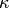

Payette Input File Formatting¶
Input File Blocks¶
Input files are comprised of several “blocks” of instruction for runPayette. A block is a group of instructions contained in a begin <block> [block name] ... end <block> pair:
begin <block> [block name]
.
.
.
end <block>
Note
The case of the text in the input file does not matter, nor does the indentation on each line. Indentation of input blocks is used only for clarity in this document. runPayette supports # and $ as native comment characters and the user can pass the optional --cchar=userchar to specify any character userchar to be used as a comment character.
Required Blocks¶
The blocks required by runPayette are:
begin simulation <title>
begin material
[material options]
end material
begin boundary
[boundary options]
end boundary
end simulation
The ordering of the blocks within the simulation block does not matter. However, all blocks for a given simulation must be nested in the simulation block. Details of the required content of each block follows.
The simulation Block¶
Each input file must have a simulation block with title for that simulation. The title of the simulation will serve as the basename for all simulation output, with spaces replaced with underscores.
Note
runPayette supports an arbitrary number of simulation blocks in a single input file.
The material Block¶
In the material block, the constitutive model and material parameters are defined. A material block takes the following form:
begin material
constitutive model <model>
parameter 1 <value>
parameter 2 <value>
parameter n <value>
end material
Note
Parameters are associated with the material, and not the constitutive model. This allows different materials to be exercised by different constitutive models without changing parameter values.
An example material input block for an elastic material would look like:
begin material
constitutive model elastic
bkmod 130.e9
shmod 57.e9
end material
The boundary Block¶
In the boundary block, the boundary conditions for the simulation are defined. The boundary block is comprised of keyword instructions to Payette and a legs block. In the boundary block below, the default values for available keywords are shown:
begin boundary
kappa = 0.
ampl = 1.
ratfac = 1.
tstar = 1.
sstar = 1.
estar = 1.
fstar = 1.
dstar = 1.
efstar = 1.
stepstar = 1.
emit = all {all,sparce}
screenout = false {true,false}
nprints = 0 {0-nsteps}
begin legs
<leg no> <time> <nsteps> <ltyp> <c[ij]>
end legs
end boundary
The various keywords and the legs block are described in the following sections.
The boundary Block Keywords¶
- [t,s,e,f,d,ef,step]star
Multiplier on all components of time, stress, strain, deformation gradient, strain rate, displacement, electric field, and number of steps, respectively. All values of the previously listed quantities are defined in each leg will be multiplied by this factor. As an example, if the simulation times are given in microseconds, tstar could be set to 1.0e-6 and the times given in integer microsecond values.
emit
Write all data (emit = all) or data from only 10 timesteps (emit = sparse) to the output file.
screenout
Print out all timestep information to the console.
nprints
Total number of writes to the output file during the simulation.
ampl
Multiplier on all leg inputs. ampl may be used to increase or decrease the peak values of the given inputs without changing the rates of those inputs.
ratfac
Multiplier on strain and stress rates - effectively achieved by dividing each time by ratfac.
kappa
The keyword kappa is only used/defined for the purposes of strain or strain rate control. It refers to the coefficient used in the Seth-Hill generalized strain definition
Where  is the keyword kappa, is the strain tensor, is the right Cauchy stretch tensor, and is the second order identity tensor. Common values of and the associated common names for each (there is some ambiguity in the names) are:
Name(s) Green True, Cauchy Logarithmic, Hencky, True Engineering, Swainger Lagrange, Almansi


The legs Block¶
The legs block defines the material states that will be applied to the single element during each “leg” of the simulation. Legs may be defined in one of two ways: 1) a general method in which all of the control parameters of each leg are explicitly defined or, 2) time, deformation type table. Each method of specifying legs is described below.
General Leg Specification¶
In the most general case, each leg will be defined as follows:
begin legs
<leg no> <time> <nsteps> <ltyp> <c[ij]>
end legs
The leg no or leg number is a strictly monotonically increasing integer, starting from zero for the first leg. There can be an arbitrary number of legs defined.
The value time defines at what time in the simulation the material state will be as it is defined in that leg. Generally the first leg (leg zero) will have a time equal to 0 (seconds, microseconds, etc.). The values of time must increase strictly monotonically with leg number.
The value of nsteps is an integer that defines the number of steps the simulation will take to get from the previous leg to the current leg. Currently, it is not possible to explicitly define a timestep for the single element tests. However, by setting the time increment and value of nsteps you can set the timestep size for that leg.
The value of ltyp or leg type is a little more involved. This keyword frequently has more features added to it, most of which are experimental. However, in this document only the most basic and stable options will be addressed.
The basic form of the leg type is a string that specifies the material state for specific components by setting each character to one of the following
- 1: strain rate control (mech,6)
- 2: strain control (mech,6)
- 3: stress rate control (mech,6)
- 4: stress control (mech,6)
- 5: deformation gradient control (mech,9)
- 6: electric field (elec,3)
- 8: displacement (mech,3)
There are two types of control here: mechanics control (mech) and electric field control (elec). Because these two types are seperated and handled individually after parsing, the mechanics and electric control characters can be mixed together without change in behavior. The integer given in the parentheses in the above list represent the maximum number of components that may be defined. The user must define at least three mechanics options for any given simulation. If no electric field options are given, they default to zero.
Once the mechanics control characters are gathered, they are checked for compatibility. Specifically, the rules are as follows:
- Deformation gradient control (5) cannot be mixed with other mechanics control options and all 9 components must be defined.
- Displacement control (8) cannot be mixed with other mechanics control options.
Then, the component values c[ij] are read in and are assigned values based on the leg type string. For symmetric second order tensors, the c[ij] user input components correlating to tensor components by
For general second order tensors, the c[ij] user input components correlating to tensor components by
![[C] = \begin{bmatrix}
C_{1} & C_{2} & C_{3} \\
C_{4} & C_{5} & C_{6} \\
C_{7} & C_{8} & C_{9}
\end{bmatrix}](../_images/math/566d3cba2c4ce4858de2aff0807864cf85838537.png)
Payette simply follows this pattern for assigning variables. However, at
least the first three must be defined (the  ,
,  , and
components). If any variables are given beyond this, it fills in the matrix in
that order up to the maximum number of components.
, and
components). If any variables are given beyond this, it fills in the matrix in
that order up to the maximum number of components.
Time/Deformation Type Tables¶
In the event that the deformation control type is constant for all legs (e.g., all legs are strain controlled), a more convenient method of defining each leg is through specifying a time/deformation type table. In this specialized case, the legs block is defined as:
begin legs
using <time,dt>, <deformation type>
<time,dt> components of deformation...
.
.
.
<time,dt> components of deformation...
end legs
This method of input is convenient for reading in history files from finite element simulations, or data collection software.
legs Examples¶
Example 1: Deformation Gradient, Uniaxial Extension¶
This example extends the material in the -direction:
begin legs
0, 0.0, 0, 555555555, 1.0, 0.0, 0.0, 0.0, 1.0, 0.0, 0.0, 0.0, 1.0
1, 1.0, 1, 555555555, 1.1, 0.0, 0.0, 0.0, 1.0, 0.0, 0.0, 0.0, 1.0
end legs
Example 2: Strain Control, Uniaxial Extension¶
All of the following produce equivalent behavior (uniaxial strain extension). Remember to set kappa to the desired value.:
begin legs
0, 0.0, 0, 222222, 0.0, 0.0, 0.0, 0.0, 0.0, 0.0
1, 1.0, 1, 222222, 0.1, 0.0, 0.0, 0.0, 0.0, 0.0
end legs
Example 3: Stress Control, Uniaxial Tension¶
Stress control can be defined in much the same way as strain control (see example 2). Assuming that the material parameters are defined in MKS, stress will be defined in terms of Pa.:
begin legs
0, 0.0, 0, 444444, 0.0e9, 0.0, 0.0, 0.0, 0.0, 0.0
1, 1.0, 0, 444444, 1.0e9, 0.0, 0.0, 0.0, 0.0, 0.0
end legs
Example 4: Mixed Control¶
This example could be used to reproduce the stress state found in the standard
tension test when the strain is known. Specifically, we prescribe the strain
value in the -direction while prescribing the lateral stresses to be
held at zero stress.:
begin legs
0, 0.0, 0, 244222, 0.00, 0.0, 0.0, 0.0, 0.0, 0.0
1, 1.0, 0, 244222, 0.01, 0.0, 0.0, 0.0, 0.0, 0.0
end legs
Note
As prescribed stress is essentially an inverse problem, prescribed stress simulations take much longer than prescribed strain simulations. This is due to the need of using optimization routines to determine the correct strain increment to input to the material model.
The general objective function used in the optimization routine is simply an L2 norm of the difference of the prescribed stress components with the output stress components. This is of particular importance when a stress is prescribed outside of the limit surface for a material and the material stress simply cannot reach the prescribed stress. For example, if the user desired uniaxial stress but prescribed the stress to some value beyond the limit surface then the stress state might develop non-zero values in components that could reasonably be expected to stay zero.
To alleviate this problem, Payette has a command line argument --proportional that enforces proportional loading for prescribed stress problems. This changes the objective function to optimize for a stress state that is proportional to the prescribed stress by some factor and that is as close as possible to the prescribed stress. Specifically, it decomposes the output stress tensor into proportional and perpendicular tensors with the proportional stress tensor begin a multiple of the prescribed stress tensor and the perpendicular tensor being the balance. The function takes the square of the L2 norm of the perpendicular tensor and the L2 norm of the difference of the proportional and prescribed tensors. In this way Payette weights the stress state such that being proportional is more important than being closer. For this objective function using the same simulation as described for the default objective function, we would maintain uniaxial stress even when the limit surface is attained.
Warning
Stress control (especially proportional loading) can introduce excessive noise when stress states are prescribed outside of the yield surface. However, it can also perform flawlessly. Be aware of the limits of the objective functions when choosing.
Example 5: Using Time/Deformation Type Table¶
In this example, the strain path of Example 2: Strain Control, Uniaxial Extension is specified with a time, strain table
begin legs
using time, strain
0. 0.0 0.0 0.0 0.0 0.0 0.0
1. 0.1 0.0 0.0 0.0 0.0 0.0
end legs
Example 6: Using dt/Deformation Type Table¶
In this example, the strain path of Example 2: Strain Control, Uniaxial Extension is specified with a time step, strain table
begin legs
using dt, strain
0. 0.0 0.0 0.0 0.0 0.0 0.0
.1 0.1 0.0 0.0 0.0 0.0 0.0
end legs
The boundary Block for Driving an EOS¶
When driving an EOS the boundary block requires different keywords and formatting than described above. Unlike the other boundary block, there are no defaults set for the boundary keywords except for nprints=5:
begin boundary
nprints <int> # Number of status updates for each task
input units <string> # unit system of the input fiel
output units <string>
density range <float> <float>
temperature range <float> <float>
surface increments <int>
path isotherm <density> <temperature>
path hugoniot <density> <temperature>
begin legs
<density> <temperature>
end legs
end boundary
input units and output units¶
The following unit systems are valid:
SI = meter, kilogram, second, kelvin, mole, ampere, candella
MKSK = meter, kilogram, second, kelvin, mole, ampere, candella
CGSK = centimeter, gram, second, kelvin, mole, ampere, candella
CGSEV = centimeter, gram, second, electron volt, mole, ampere, candella
SESAME = centimeter, gram, 10microsecond, kelvin, mole, ampere, candella
SHOCK = centimeter, gram, microsecond, electron volt, mole, ampere, candella
The input file must be written in a self-consistent unit system and it must be one of the above. Special care must be given to ensure that if you are using the matlabel function in the material block that your input units are the same as the units that the parameters are specified in the control file.
Generate a Surface¶
To generate a surface, you must specify the density range, temperature range, and the surface increments. This will evaluate a square grid of evenly spaced points over the density and temperature range and write the output to a file simname.surface.
Generate an Isotherm¶
To generate an isotherm, you must specify the density range, temperature range, and path isotherm. The density-temperature point defined on the path isotherm line is the starting point of the isotherm and then continues in the positive temperature direction until the point is outside of the density and temperature range. The isotherm is written to a file named simname.isotherm.
Generate a Hugoniot¶
To generate a Hugoniot, you must specify the density range, temperature range, and path hugoniot. The density-temperature point defined on the path hugoniot line is the starting point of the hugoniot and then continues in the positive density direction until the point is outside of the density and temperature range. The Hugoniot is written to a file named simname.hugoniot.
Evaluate Specific Points¶
To evaluate specific density-temperature points, create a legs block that contains the density-temperature pairs that you wish to evaluate. There can only be one pair per line. When specific density-temperature points are not desired, then the legs block is not needed.
Optional Blocks¶
The following blocks are optional: mathplot, permutation, extraction, optimization.
mathplot Block¶
The mathplot block is used to specify optional plotting information written to the simnam.math[1,2] output files for use in Rebecca Brannon’s Mathematica post processing files. The basic syntax is:
begin mathplot
var1 var2 var3
var4, var5, var6
var7; ...; varn
end mathplot
where var? are Payette and material model variables. A complete list of plotable variables is listed in each simulation’s log file. Each line in the mathplot block can contain an arbitrary number of space, comma, or semi-colon delimited variables.
Inserting External Files¶
External files containing formatted Payette input can be included anywhere in the input file through the include and insert directives. For example, material parameters can be kept in a separate parameter file and inserted in to an input file by:
begin material
constitutive model kayenta
insert salem_limestone.dat
end material
When Payette encounters an [insert,include] directive, it looks for the inserted file by it’s absolute path, in the current directory, and in the PAYETTE_ROOT/Aux/MaterialsDatabase directory, in that order.
Example: A Complete Input File¶
Below is an input file, any keywords not given take the default values shown in The boundary Block Keywords. In this input file, a material defined by the elastic constitutive model is cycled through the same deformation path by first prescribing the strain, then the stress, strain rate, stress rate, and finally the deformation gradient.
begin simulation elastic unistrain cycle
begin material
constitutive model elastic
shmod 53.e9
bkmod 135.e9
end material
begin boundary
kappa = 0.
tfac = 1.
amplitude = 1
begin legs
# l t n ltyp c[ij]...
0, 0., 0., 222222, 0., 0., 0., 0., 0., 0.
1, 1., 100, 222222, .1, 0., 0., 0., 0., 0.
2, 2., 100, 222222, 0., 0., 0., 0., 0., 0.
3, 3., 100, 444444, 20.566e9, 9.966e9, 9.966e9, 0., 0., 0.
4, 4., 100, 444444, 0. ,0. ,0. ,0. ,0. ,0.
5, 5., 100, 111111, 0.1 ,0. ,0. ,0. ,0. ,0.
6, 6., 100, 111111, -0.1 ,0. ,0. ,0. ,0. ,0.
7, 7., 100, 333333, 20.566e9, 9.966e9, 9.966e9, 0., 0., 0.
8, 8., 100, 333333, -20.566e9, -9.966e9, -9.966e9, 0., 0., 0.
9, 9., 100, 555555555, 1.1052, 1., 1., 0., 0., 0., 0., 0., 0.
10, 10.,100, 555555555, 1., 1., 1., 0., 0., 0., 0., 0., 0.
end legs
end boundary
begin mathplot
sig11 sig22 sig33
eps11 eps22 eps33
end mathplot
end simulation